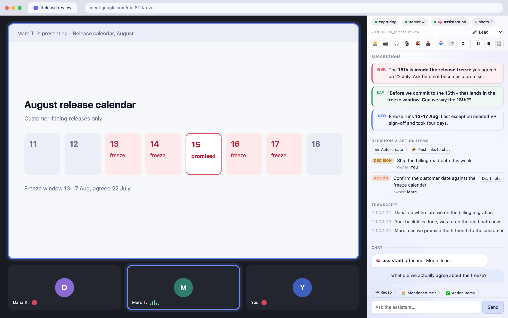

Your own agent session, in the call with you.
It reads the Google Meet or Zoom transcript as it happens and answers in a side panel while the call is still going: what was just decided, who owns what, the risk you just agreed to, and the sentence to say next. It decides when to speak up on its own, so you never stop listening to go and ask it. The transcript is a file on your disk.
Free · you run it yourself · needs an MCP agent (tested: Claude Code) · Meet + ZoomFour moments, in the order they happen. The "say this" line is one of six markers, and it sits next to the decisions and risks the panel surfaces alongside it.
| In the room | In your panel, a second later |
|---|---|
| Someone asks you a direct question and you need a beat to assemble the answer. | 🟢 SAY a complete sentence you can read out without rehearsing. |
| A number gets disputed and nobody has it to hand. | 🔵 INFO the figure, from your own notes, repo or tickets, with where it came from. |
| The group agrees to something in passing. | 🟡 SUMMARY the decision, on a board you can read after the call instead of reconstructing it from memory. |
| You are about to commit to a date that contradicts a decision from two weeks ago. | 🔴 RISK the contradiction, while you can still say "actually, let me check something". |

You could type all of this to an agent in a terminal yourself. You would also stop listening while you did it, and in a live call that costs more than the answer is worth. So it reads along, decides on its own when it has something worth your attention, and puts it in the panel before you had thought to ask.
It checks what the room is asserting. "Filters took about two weeks" is the kind of sentence that gets repeated until it becomes a plan. If your tracker says 31 days, you get 31 days and the ticket it came from, before the sizing closes.
One toggle turns suggesting into doing. Turn on 🤖 Auto-create and the moment someone says "raise a ticket for that", the ticket exists, with the link already dropped in the meeting chat if you also turned that on. Same for a planning note or a summary. You authorize once, in the panel, not once per item, and both toggles are off until you flip them.
Not tied to Jira. The tracker is whatever you name in Options, and with no name at all the button says "Draft note" and the assistant produces a plain one. Your agent creates things through the tools your own session already has, so a team on Linear, Asana, Notion or nothing in particular is not a special case here.
You need an AI coding agent that speaks MCP. Claude Code is the one this is tested with. The extension ships the eyes, ears and hands - capture, panel, local bridge - but not the brain; that is an agent session on your own machine, reading the call through MCP tools. Without one you get a working transcript recorder and an empty advice pane, which is not what the rest of this page shows.
The meeting is other people's conversation too. Turning on captions is invisible to everyone else, unlike recording, which Meet badges. So by default this posts one line into the meeting chat when capture starts, saying an assistant is transcribing locally. You can edit that line or switch it off. Some places require everyone's agreement before a conversation may be recorded or transcribed. That is a call only you can make, and the privacy policy states it up front.
Where we draw the line on interviews and exams, and what happens to a recording you did not ask for: the Q&A.
This ships the eyes, ears and hands. The brain is whatever agent you already run, and the adapter is plain JSON-RPC over stdio with nothing vendor-specific in it. What matters is not the vendor: it is whether your client can hold a persistent background loop, because MCP is client-pull and nothing here can start your assistant's turn.
Two of those are claims we can back. Claude Code is the one this has been run through a live meeting with. Codex was checked here: it registers the server, discovers the tools and completes a call against the bridge. The rest speak the protocol, which is the easy half. The hard half is the background loop, and until someone runs one we list them as untested rather than supported. MCP-CLIENTS.md tells you what to check in yours.
Same product, same install. The profile you pick decides which meetings the assistant expects and what it leads with, so it stops guessing at someone else's kind of call.
Product, delivery, engineering management. Decisions and owners land on a board as they are agreed,
a date that contradicts an earlier one gets flagged while it is still a proposal, and the ticket someone
asked for exists before the call ends.MLA_PROFILE=engineering
Standups, incident triage, refinement. It knows your tickets and your repo, flags scope creep, and
writes decisions down as they are made. With no meeting at all, co-pilot mode watches the tab you are
working in.MLA_PROFILE=engineering
A design review produces opinions faster than anyone writes them down, and half of them are about
something on screen. Snapshots keep what was being shown when it was said, and the board keeps what was
actually agreed rather than what everyone remembers.MLA_PROFILE=generic
Research, usability, hiring. Moderate the conversation instead of taking notes: it stays quiet, flags
a leading question the moment you ask one, tracks which topics you have not covered, and writes the
debrief afterwards.MLA_PROFILE=research
Sales, success, consulting. The number you are about to quote and the date you are about to promise
get checked against your own notes while the call is live, and what you committed to is written down
instead of reconstructed on Friday.MLA_PROFILE=generic
You already know the answer; it just is not in English yet. By the time the sentence is ready
the conversation has moved on. This puts it on your screen in time to say it, and explains the idiom
nobody defined.MLA_PROFILE=second-language
None of these? generic covers it, or write your own profile as a file - they are about a
dozen lines each. A customer call is someone else's conversation as much as yours; the disclosure line above
is on by default for a reason.
| What | Where it goes |
|---|---|
| The transcript, the screenshots, your chat with the assistant, the summary | Your disk. Nowhere else. Owner-only files in one folder, served by a process bound
to 127.0.0.1. No account, no telemetry. There is no server of ours to send anything to. |
| The parts of the call you route to the assistant, and the questions you ask it | Anthropic, through your own Claude Code session - the same path as every other thing you do in Claude Code, billed to your account, under your terms. It borrows the brain you already pay for instead of running a weaker one locally. |
| Anything else | Nothing. There is no third party in this product. |
Three steps, and only the first two need a terminal. Requires Node 20+ and Chrome 116+.
It installs the skill, registers the tools your assistant will call, and prepares the folder your meetings are written to. It changes nothing outside your home directory.
git clone https://github.com/krystiangw/meet-live-assist-extension.git
cd meet-live-assist-extension
./install.shA zero-dependency Node server, bound to 127.0.0.1. --pair opens a
two-minute window for the extension to collect its access token by itself - there is nothing to copy
and paste.
node server/transcript-server.js --pair
curl -s http://127.0.0.1:8848/health # → {"ok":true,...}chrome://extensions → enable Developer mode →
Load unpacked → pick the folder you just cloned. Pin it and click the icon; the panel
pairs itself with the server. Then open Claude Code and ask it to assist your meeting - it loads the
meet-live-assist skill, attaches to the live call, and starts answering in the panel.
Pairing window expired? Run the same --pair command again; against an
already-running server it re-opens the window. Or paste the token by hand from
<data dir>/.mla-token into the extension's Options - that path still works.
Autostart the server, speak into the call, or transcribe without captions: the optional steps.
This is early and free, and the only thing that decides whether it grows is whether anyone finds it useful. A sentence about what you expected and what happened is worth more than a filled-in form.
Including "I gave up halfway through the install" - that one is the most useful report there is.
Open an issue
Describe the moment in the call, not the feature: what happened, and what you wished had been on
screen at that second.
Request it
Questions, a use case nobody thought of, or telling us it works.
Browse or open an issue
One question worth answering even if nothing else: which profile did you install, and was it the right one? Nothing in the extension reports back, so that answer only exists if you type it.
Built by Krystian Gwizdała, for his own calls first. There is no company behind it and no roadmap committee - which is why the answer to "will you add X" is usually just yes or no. More of what I work on →